|
Fourth Law of Logic
APPENDIX
III
A CONDITIONAL CRITERION FOR IDENTITY, LEADING TO
A FOURTH LAW OF LOGIC
Summary
If logic is regarded as a set of perceptual operations, then logic has a chronotopology (time structure). Identity or nonidentity then results as a decision from an algorithm
- a set of perceptual operations and comparisons - in which case the nature of a particular identity is conditional upon the nature of the set of perceptual operations comprising the algorithm.
Ordinary logic does not account for the temporal aspects of perception, merely accounting for the spatial aspects.
In other words, Aristotlean logic is a synthesis of primitive observation, fitted to the partial (spatial) reality emerging from spacetime after the imposition of the monocular (one-at-a-time) photon interaction with matter.
In quantum mechanics, time is a parameter, not an observable. Hence measurement/detection (of observables) deals with primitive
observation and Aristotlean logic (topology).
Total reality includes nonprimitive observation -
hence, non-Aristotlean logic (chronotopology) - as shown in Young's two-slit experiment.
By applying temporal accounting to each perceptual operation, Aristotle's three laws can be shown to be self-contradictory and incomplete as written. That is, they are topolological, not
chronotopological.
A simple derivation of a fourth law is shown and an application rule given which itself may be regarded as a fifth law of logic.
A proof of the fourth law by demonstration is given.
The resulting four-law logic is chronotopological. The
application rule states that either Aristotle's three laws apply explicitly and
the fourth law is implicit, or the fourth law applies explicitly and Aristotle's
three laws are implicit.
The four-law chronotopological logic is
theoretically capable of resolving every present three-law paradox.
Aristotle's Laws and the Paradox of Change
Aristotle's three laws of logic, on which
foundation rests all mathematical, physical, and rational thinking, can
ordinarily be stated as shown in Table 1.
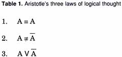
A variety of arguments can easily be produced to
show that these
laws are incomplete; i.e., they do not specify all reality, for parts of reality
can be shown to contradict one or more of Aristotle's laws.
Indeed, all "observed" reality can be
shown to violate all three laws.
E.g., the most direct violation is posed by the
problem of change, a problem originally propounded by Heraclitus about 500 B.C.,
and unsolved to this day. Heraclitus pointed out that, for a thing to change, it
must turn into something else, and then asked how a thing could be something
other than itself?
We may think of a thing - say, α - some feature A
of which is said to change. If A changes, it turns into 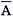 , thus violating logic
laws one and two. Further, we are considering A as the "changed thing, ," i.e., something which is somehow both A and
, so logic law three is
violated as well.
Thus, if Aristotle's laws are taken to
be all the fundamental laws of logic, then logically there can be no change
whatsoever, because change negates all three laws. I.e., either change does not
exist or it is totally illogical.
Since all measurements, detections, thoughts, and
perceptions are simply changes, then it follows that these operations logically
cannot exist. Or, if we assume the "operations" to exist, their
outputs cannot exist. If the operations do not exist, then again their outputs
do not exist.
So if the products or outputs cannot exist, then
by this reasoning no perceived, detected, measured, conceived thing exists. If
we then insist that such things do indeed exist, then all is paradoxical and
illogical. This is essentially the nature of the paradox posed by Heraclitus.
Heraclitus's change paradox has not been
satisfactorily resolved to this day, and rigorously all the rational science of
the Western world, being based on paradoxical change (detection, perception,
observation) is itself totally illogical by its own logical standards.
Resolving the Paradox of Change
However, the conditions necessary to
resolve the problem of change can be stated simply by inspection of the problem
as follows: (1) Aristotle's three laws must specify or apply to only that which
is not changing, since change violates or negates all three laws; (2) If change
is to logically exist, there must exist at least a fourth law of logic, one
which applies to change; (3) This fourth law must contain the negations of each
of the first three laws, since change negates them; (4) To be consistent, in any
particular logical case, either the three laws explicitly apply or the fourth
law explicitly applies (i.e., either change explicitly exists in that particular
case or it does not); (5) Since all four laws must apply at all times, then when
the three laws apply explicitly, the fourth law must be implicit - and when the
fourth law applies explicitly, the three laws must be implicit.
With the five stated conditions, a fourth axiom of logic can be written simply
by writing down the negations of Aristotle's three laws, and synthesizing these negations into a single fourth
law, as shown in Table 2.
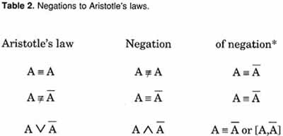
* These negations mean that A and
are totally undifferentiated.
However, even though we can synthesize the
negation into a single law - the old "identity of opposites" idea - we
still have the problem of understanding such a law. Though at first glance the
negations and the synthesized fourth law seem bewildering, we can readily
comprehend them if we carefully consider the temporal nature of the process that
occurs in logical thinking.
The Importance of Time
Specifically, a finite interval of time is
required to perceive, think, detect, or observe an entity - regardless of whether
we refer to "physical" or "mental" detection, because both
physical and mental processes are temporal. Indeed, we flatly state without
further discussion that ultimately the identifying or mapping of physical and
mental operations onto each other is what time is a priori.
At any rate, we now carefully account for each
individual time interval required to think, conceive, detect, perceive, or
observe any entity - whether that entity is physical or mental - and we also
account for the finite time interval required to perform a logical operation. So
we rewrite Aristotle's three laws as shown in Table 3, with subscripted numbers
indicating the separate time intervals in each law.
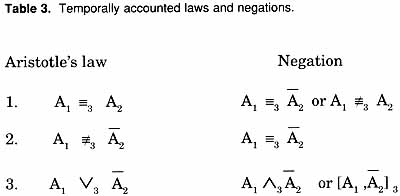
The resolution to the entire mystery so long inherent in
these axioms of logic now stands simply revealed: Whether one of Aristotle's
laws holds or its negation holds is determined solely by the nature of the
logical operation in time interval three.l
I.e., the operation in interval three may be
regarded as an algorithm comprised of subsidiary (assumed) operations in
separate time subintervals that, taken together, comprise the overall operation
implied by the logic symbol.
Thus in the first law, if temporal tags (time
snapshots) are not accounted (i.e., if they do not apply), then Aristotle's laws
hold, for the snapshot 1 of A is not differentiated in algorithm 3 from snapshot
2 of A. This then rigorously holds for spatial (L3) entities, but not for
spacetime entities. The snapshots in this case for Aristotle's first law (and
the others as well) are spatial snapshots. On the other hand, if
snapshots 1 and 2 of A are themselves temporally differentiated in algorithm 3.
then the negation of Aristotle's law applies, because the spacetime snapshots
Al and A2 are different. This is immediately apparent, e.g., in a Minkowski
geometry representation, where the second snapshot of A will have a time
coordinate different from the time coordinate of snapshot 1. This is represented
as shown in figure 1, where "A" is taken as a simple magnitude, in
this case 5.
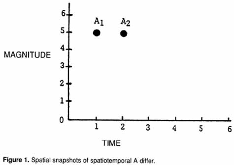
As can be seen from figure 1, 51 is not
identical to 52 unless we imply the operator
∂ / ∂ t in the time
interval three algorithm.
The negation of the second law may also be
simply understood if we use temporal accounting. E.g., suppose we take A1 = +1,
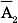 = -1 and then pose the absolute value operator
|| for potential use in
algorithm 3. If || is not used, then
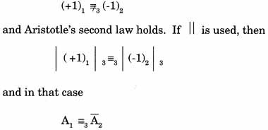
Note we are taking the view that there is nothing
"absolute" or "inherent" about identity or non-identity;
instead, each is a conditional result that can only be established by some
logical, comparative set of operations. If the suboperations comprising the
decision algorithm for the identity/non-identity determination are changed, the
finding of the algorithm ( the decision) may often change. Specifically, one
can have the cases
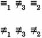
Thus we advance a conditional identity
criterion to be incorporated into formal logic: "Identity" or
"non-identity" is defined by a decision made as a result of applying
an operational algorithm; changing the internal operator components assumed
inherent in the algorithm can change the decision. We are stating a fundamental
principle that "identity" and "non-identity" are conditional
and only conditional; they are never absolute.
Primitive Observation and
"Reality"
With these points made, we now turn to the
third law. From Table 2, on examination it can be seen that the third law
actually is a statement for monocular perception, detection, observation,
thought, or conception. Indeed, this law says that only a single thing at a time
can be perceived, detected, observed, thought, or conceived.
As we pointed out in a previous paper2, there is a
very good reason for this "law." Primitive man lived almost
exclusively in a reality detected by light, by the photon interaction. Even in
the absence of visible light, all bodies have temperature, and man is immersed
in a "sea" of continual electromagnetic photon with interactions. The
photon interaction is monocular -- only one at a time interacts with a particle
of mass. Further, photon interaction constitutes the operator ∂/∂T invoked upon
L3T spacetime. Photon emission carries away time (the photon is made
of (ΔE ΔT), leaving behind an L3 spatial reality, as we have previously pointed
out.3
So all our primitive concepts, ideas, and notions
about reality have come from over four million years of hominid and human
experience in the photon-detected partial reality ("physical,"
"objective," or "spatial" reality) that remains when the
time "dimension" (fundamental variable) is destroyed from L3T
spacetime, leaving only L3 space behind. Specifically, our observed
macroscopic reality consists of large temporal (mental) aggregates of such
spatial results, where we cannot distinguish the tiny temporal separations of
the pieces. Thus all our observed/perceived entities are spatial, and further,
each perception/observation snapshot results in a frozen, unchanging spatial
entity (resulting - in physical detection - from the so-called "collapse of
the wave function." The loss of a wave function is simply the loss of
time.) We vaguely sense "time" and "change" as the relation
between these snapshots - i.e., by causality, or the ordering of the spatial
changes - much as we see "movement" in movie frames rapidly projected
onto a screen one-at-a-time.
Thus our primitive observations, from which have
painfully been formed our relational concepts and ideas, are monocular,
unchanging, and spatial. Aristotle's three laws of logic - which indeed may be
taken to be only a simple synthesis of our primitive observation and
corresponding relational concepts - then exhibit the same characteristics; they
are monocular, unchanging, 3-dimensional, spatial, non-temporal relational
statements. Any statement that is temporal, changing, or 4-dimensional will thus
appear as a logical paradox to this logical shorthand.
But from Young's two-slit
experiment, we already
know that reality and relationships between its parts are quite different if the
photon interaction is not invoked -i.e., if ∂/∂T is not invoked.
Classical
reality (as prescribed by Aristotle's laws) is directly violated by an electron
in the two-slit experiment, e.g., if and only if photon interaction with the
electron is not invoked. Again, this has been simply explained by the present
author4, and Charles
Musès as early as 1957 pointed out the absence of any
mystery in Young's experiment if the chronotopological aspects were considered.5
The Conscious Mind is Fitted to the
Photon Interaction
However, what is normally referred to as
the "conscious, thinking mind" is simply a functioning temporal
(rigorously, chronotopological) mechanism that is painfully built up in the
individual's awareness (his mind in the greater sense of both thought and
awareness, whether monocular or multiocular) by training, conditioning and
experience. Its functioning is largely conditioned by one's 90% or so attention
to visual stimuli (to the partial reality remaining after photon interaction has been invoked, and to the
memory-collated ordering of vast numbers of such photon interactions) and by
one's cultural conditioning - which itself has been almost exclusively
conditioned and shaped by the monocular photon interaction at base root.
Thus, since the beginning of man, his conscious,
rational mind has been trained and constructed to function almost exclusively in
basic correspondence with the photon interaction, and his experiential reality
consists of the partial reality stripped from fundamental reality by photon
interaction.
All "perceived differences," e.g., are
created by this deep mind-set. As has been previously pointed out, 6 the
solitary human problem responsible for all man's inhumanity to his fellow man is
directly dependent upon man's almost exclusive detection, observation,
perception, and conception of "difference" between humans, these
"differences" being due exclusively and totally to the fitting of men's
conscious minds to the photon interaction's monocular separation of spatial
reality from nonspatial reality, i.e., to
∂/∂T (L3T) =>
L3
Such well-nigh total devotion to, and enslavement
by, photon interaction also is responsible for the scientist's well-nigh total
devotion to, and enslavement by, the present imperfect and incomplete three laws
of logic, as presented by Aristotle. The depth of that devotion and enslavement
is evidenced by the fact that the resolution of such paradoxes as Heraclitus's
problem of change have eluded the best minds of humanity for several thousands
of years. Indeed, these paradoxes cannot be resolved by the conscious, rational
mind in its present state, for it has been most firmly constructed and fitted to
function in accordance with the photon interaction.7 One cannot hope to resolve
any logical paradox by using only those same logical methods that found the
situation to be paradoxical in the first place!
Dimensionality
That we need not be constrained by such
universal delusion is already shown by binocular vision. Specifically, in
viewing a three-dimensional object, each eye never detects a "third
dimension," but detects only an L2 2-dimensional picture. By taking two
slightly different 2-dimension snapshots and
superposing them, the third dimension is gained. One then essentially sees the
resultant super- posed pictures as "almost the same but not quite." I.e., the Aristotlean identity algorithm, if satisfied, yields "no
difference, hence one object," and if not satisfied, yields
"difference, hence multiple (extended) object(s)." So if the two
snapshots are almost Aristotlean- identical but not quite, we get an
extended-two-dimensional (three-dimensional) object. Otherwise we see two
separate, two-dimensional snapshots blurred together (the reader is urged to
try this and see).
The point is,
"dimensionality" and the identity algorithm are directly related, and
geometrically one follows from the other.
Awareness of Time
In very similar manner, we
can only gain cognizance of awareness of "time" (as a fourth
dimension) by the superposing of two slightly differing (Aristotlean-wise)
3-dimensional snapshots. As is well known, e.g., time is not an
"observable" in quantum mechanics; it is a "parameter ."
Rigorously, the only place such snapshots - each of which is "past"
(spatially separated by the annihilation of time in the collapse of the wave
function) - can multiply exist is in the "mind" in its most general
sense. In a rigorous sense, mind and time can be taken as identical, and the
"flow of time" can be taken as the "flow of mind connections or
superpositions" of its spatial components. I.e., measured/detected/observed
"physical phenomena" are a priori 3-dimensional and spatial, while a
mind is four- dimensional and hyperspatial. 8 Spacetime exists mentally but not
observably. Time is logically implicit, not explicit.
Temporal Aspects of Logic
Now we return to the
temporal aspects of logic. Each perceptual part of each Aristotlean law is
fitted to the photon interaction, hence monocular. The logic operation, inherent
in the logic symbol in each statement, involves temporal superposition or
comparison of spatial perceptual objects. Hence the logic operation is
hyperdimensionally a function of mind and injects mind/time into the statement.
Yet these laws, being fitted to or synthesizing photon interaction, at- tempt to
prescribe the absence of time, even though writing down the logic operation
rigorously invokes time. They are thus totally contradictory, since as written
they implicitly violate themselves.
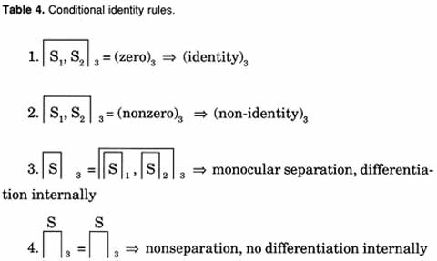
Rules one and two simply state that, when
snapshots 1 and 2 are superimposed (subtracted) in time interval 3, the
resultant snap shot 3 may be zero or nonzero. If zero, snapshots 1 and 2
are said to be identical, and if snapshot 1 is to be labeled A, then snapshot 2
is to be labeled A. If snapshot 3 is nonzero, snapshots 1 and 2 are said to be
nonidentical; if snapshot 1 is labeled A, then snapshot 2 is labeled
.
Rule 3 says that snapshot 3 is a
"memory" snapshot, and it may be particulately examined to monocularly
separate snapshots 1 and 2.
Rule 4 states that snapshot 3 is not a
"memory snapshot" and may not be further separated.
Note that in logic we repeatedly apply these rules
in combination, serially or compositely. Note further that Rule 1 must serially
apply both rules 3 and 4, as must rule 2 also.
If we take 4
| 3 to mean
"rule 4 applied conditional to rule 3 also being applied," and 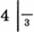
to mean "rule 4 applied conditional to rule 3 not also being
applied," we may write Table 5:
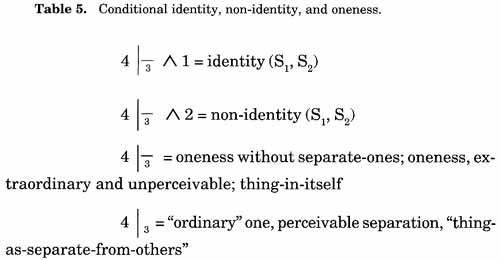
As can be seen, this type of reasoning also sheds
a great deal of light on the long-standing problem of the
"thing-in-itself," but that is beyond the scope of this paper.
The Fourth Law of Logic
Now we write the fourth law of logic as
follows:
4. (A1,
)3
=> A1 ≡3
where all we have said is that, by rule 4, in snapshot 3 no memory process
is allowed, and no separation/differentiation whatsoever of A1 and
is
permitted. Under these operational conditions for identity, what had previously
been called A1 in snapshot 1 and what had been called
in snapshot 2 are indistinguishable, hence identical.
Figure 2 shows this concretely, and may be
taken as a proof of the fourth law by demonstration.
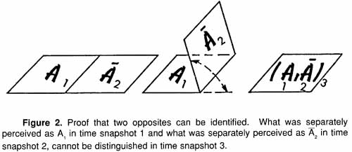
Thus the age-old philosophical
dilemma posed by the illogical identity of opposites has a simple
resolution if one considers temporal aspects, and introduces temporal
conditions for identity or non-identity decisions.
We now write the new four law conditional
identity logic as shown in Table 6:
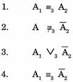
Further, we point out that all four laws now
apply. Laws 1, 2, and 3 are the laws of explicit monocular perception, with
implicit binocular perception. Law four is the law of explicit binocular
perception, with implicit monocular perception. Both monocular and
binocular perceptions must be and are used in each law. So in any
situation, either the triad applies explicitly and the fourth law applies
implicitly, or the fourth law applies explicitly and the triad applies
implicitly.
Indeed, one can even take the view that we
have prescribed a five-law logic, the fifth law being taken as shown in
Table 7:
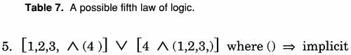
In a previous paper,9 , the author has
already presented methods to apply this new logic to resolve present
paradoxes. At least hypothetically, every present paradox should be simply
a statement of the explicit fourth law, and it should be resolvable by
explicit application of that law10.
NOTES AND REFERENCES
-
Specifically, by whether or not exclusivity applies. I.e. , we
may read Law 1 as "In snapshot (time interval) 3, what was A in
snapshot 1 is exclusively identical to ( unseparated from) what was A in
snapshot 2." Law 2 may be read as "In snapshot 3, what was A in
snapshot 1 is exclusively not identical to (is exclusively separated from)
what was not-A in snapshot 2." Law 3 reads, "In snapshot 3, what
was A in snapshot 1 and what was not-A in snapshot two are exclusively
separated." Thus it can be seen that the three laws simply are
statements involving whether or not two former perceptions are to be
separated in a third perception. These three statements presently
prescribe the total separation of the two previous perceptions and
prohibit any admixture of the two - the so-called "excluded
middle." Thus the three laws prescribe monocular, one-at-a-time
perception.
What we call a "wave"
exists in time and is considered to contain an admixture of timeless,
static spatial states (such as "wavelengths.") The prohibiting
of admixtures thus represents the "collapse of the wave
function" and corresponding loss of time. This defines
"observation" and explains why all "measurement" and
"detection" and "observation" - requiring a collapse
of said wave function - are spatial and not spatiotemporal. That is why
time is a parameter in quantum mechanics, not an observable.
Relativity, being
constrained by such logic, obviously can find nothing "physical"
( observed, spatial, timeless thing frozen by the collapse
of the wave function as engendered by or fitted to the photon interaction)
that is traveling faster than light - i.e., that violates the conditions
implied by the "observing/detecting agent."
That reality need not at all be
so constrained is clearly shown by Young's two-slit
experiment, the heart
of all quantum mechanics. In this experiment, "classical' reality is
violated if and only if the photon interaction is not invoked. Classical
reality is obeyed if the photon interaction is invoked.
With appropriate change to logic
to fit "reality that has not been interacted with by photons"
and therefore is spatiotemporal, a new physics becomes possible.
-
Thomas E. Bearden, "Solution of the Fundamental Problem of Quantum
Mechanics," January 3, 1977, Defense Documentation Center.
-
Bearden, "Photon Quenching of the Paranormal (Time) Channel: A
Brief Note," 20 April 1977, Defense Documentation Center.
-
Bearden, "Virtual State Engineering and Its Implications,"
1979, Defense Documentation Center.
-
With the possible exception of Kozyrev - whose more technical works on
time remain undisclosed to open science - no other person known to this
author seems to have grasped the implications of a dynamic structure of
time as penetratingly as has Charles Musès. The importance of the time
interaction explaining the two-slit experiment (i.e., in explaining wave-
particle duality) was noted as early as 1957 by Musès. See, e.g., Musès'
introduction to Jerome Rothstein's Communication, Organization, and
Science, The Falcon's Wing Press, Indian Hills, Colorado, 1958, p. lxii,
where Musès pointed out that the celebrated wave-particle paradox remains
a paradox only so long as the chronotopological (his word) phases of the
phenomena are left unrealized in the analysis. The entire foreword by
Musès is a remarkable document which analyzes the structure of time
itself. With his hypernumbers Musès can describe the nested structure of
time, which is what is actually being carried
by the photon. Further, he can theoretically predict mechanisms by means
of which these structures can be orthorotated. It would appear that
practical devices should be constructable on the principles elucidated by
Muses, and it is little short of astonishing that fundamental work of such
importance and application has been thus far little used by theorists,
though it is already recognized in the standard literature; e.g., the
profound summary paper "Hypernumbers II" in the January 1978
issue of the journal Applied Mathematics and Computation, published by
Elsevier.
-
Bearden, "The One Human Problem Its Solution, and Its Relation to
UFO Phenomena," Defense Documentation center, January 3,1977.
-
Which is why a Zen master often gives the student a koan to confound
and overwhelm this automatic, robotic mindset and functioning that has
been constructed as the student's "conscious mind."
-
Specifically, consciousness/life involves a seven dimensional
body/being in an infinite-dimensional universe. See Thomas E. Bearden,
" A Mind/Brain/Matter Model Consistent with Quantum Physics and UFO
Phenomena," prepared for the 1979 MUFON Annual Symposium, available
in the Proceedings, MUFON, 103 Oldtown Road, Sequin, Texas 78155.
-
Bearden, "The Fourth Law of Logic,"
Specula, Journal of the
American Association of Meta-Science, P.O. Box 1182, Huntsville, Alabama
35807, Vol. 2, No.1, January-March 1979, pp. 30-40; also in publication in
Defense Documentation Center. (The journal Specula is no longer published).
-
No consideration of the foundations of logic and mathematics is
complete until one has read Morris Kline, Mathematics: The Loss of
Certainty, Oxford University Press, New York, 1980. |